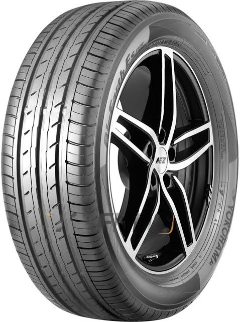

Yokohama BluEarth ES32 195/50R16

RM 273.00
The Yokohama BluEarth-Es ES32 is a fuel-efficient passenger car tyre designed to deliver excellent driving comfort, balanced dry and wet grip, and long-lasting tread life. Its advanced tread design helps reduce rolling resistance and promote even wear, making it an ideal choice for daily commuting and highway driving.
Klang Hock Li Tyre Services Sdn Bhd, Klang, Selangor, Malaysia.
View live product details and enquire